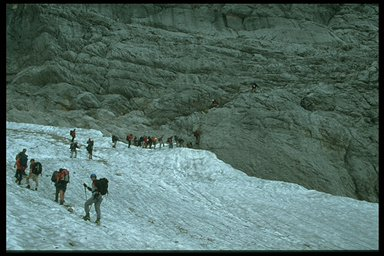
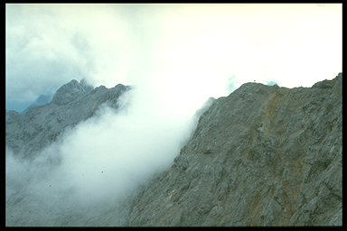

Besteigung der Zugspitze im August 2002

Der Plan
Die Tour, die ich 1999 alleine durchgeführt habe, wollen wir jetzt zu acht
wiederholen.
1. Tag: Mit dem Nachtzug von Duisburg nach Garmisch Partenkirchen
2. Tag: Hammerbach - Höllentalangerhütte
3. Tag: Höllentalangerhütte - Zugspitzgipfel - Knorrhütte
4. Tag: Knorrhütte - Reintal - Garmisch Partenkirchen - mit dem IC
zurück nach Duisburg
Die Teilnehmer
- Andreas Gruenwaldt
- Andreas Ulbrich
- Carsten Subbe
- Frank Gnaegy
- Mattias Geier
- Matthias Geining
- Tapani Hiltunen
- Torsten Lohoff
Im folgenden ein paar Bilder, da ich die Route im anderen Artikel schon
beschrieben habe. Wir hatten super Wetter allerdings werde ich die Hütten
dort am Wochenende versuchen zu vermeiden, da sie teilweise zu 200% belegt
waren.
Beginn der Tour in Hammersbach
In der Höllentalklamm
Gesamte Aufstiegsroute, Gipfel in Wolken
Blick vom Schwarzkopf Richtung Garmisch-Partenkirchen
Die Höllentalangerhütte
Blick zurück ins Höllental mit Höllentalangerütte
Die Leiter, der Beginn des Klettersteiges
Viel Verkehr auf der Leiter
Auf dem Weg zum Brett
Das berüchtigte Brett
Freie Kletterstelle nach dem ersten Klettersteigstück
Schotterpiste zum Höllentalferner
Rast vor der Gletscherüberquerung
Auf dem Gletscher

Stau vor der Randkluft
Blick zurück auf eine der Spalten
Einstieg in den zweiten Klettersteigteil
Blick zurück auf Gletscher
Auf dem Klettersteig zum Gipfel
Kurz vor dem Gipfel
Blick auf den Eibsee

Blick auf den Jubiläumsgrat
Kurz unterm Gipfel
Auf dem Zugspitzplatt
Knorrhütte mit Reintal
Abstieg ins Reintal
Weg zur Reintalangerhütte
Reintalangerhütte
Blaue Gumpe im Reintal
|